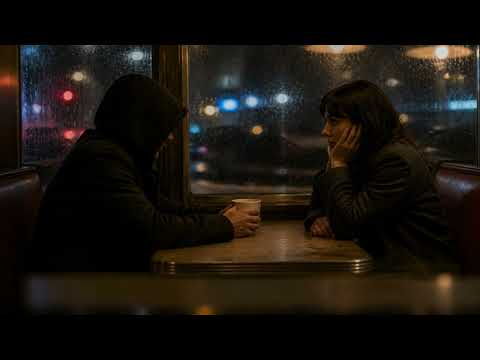
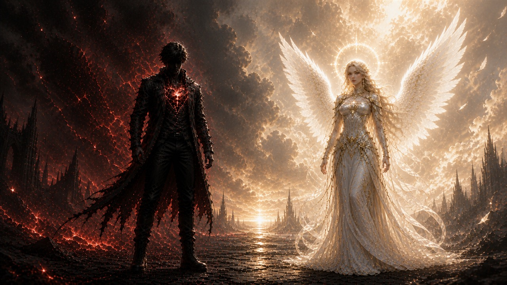
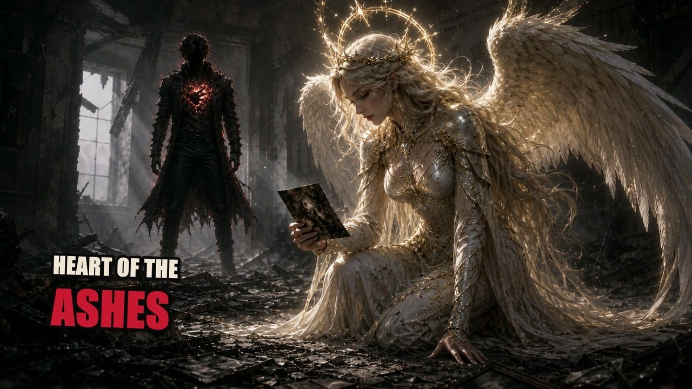
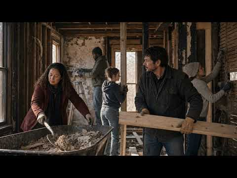
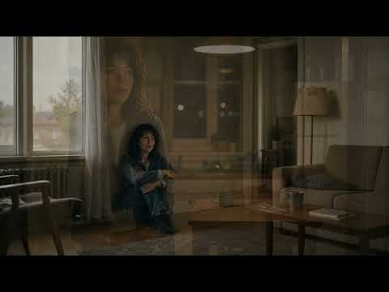
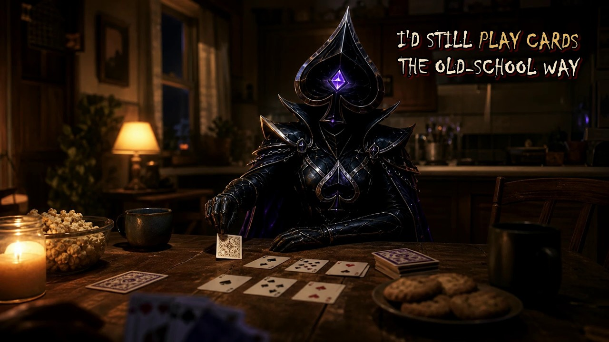

Now showing
Human Too
Judgment makes people disappear. This film asks us to see the person before the label.
WatchThe Visual Archive
Music films, story chapters, and the moments GhostHeart could not leave in silence.
Featured film

Now showing
Judgment makes people disappear. This film asks us to see the person before the label.
WatchThe Screening Room
Open a film when you are ready. Nothing plays without you.

The official widescreen film for “Angel in the Ashes”: mercy enters the fire, and GhostHeart chooses to rise beside the Angel.
WatchA reckoning with what pain changed—and what it could not erase.
Captions and transcript: not yet available.
Watch
Light returns without waiting for anyone to approve it.
Captions and transcript: not yet available.
WatchThe quiet weight of what remains when everything else changes.
Captions and transcript: not yet available.
Watch

A promise to become the father the next generation deserves.
Captions and transcript: not yet available.
Watch
Survival answers the dark with one more morning.
Captions and transcript: not yet available.
WatchA demand to be seen clearly instead of reduced to a wound.
Captions and transcript: not yet available.
WatchThe cycle keeps turning until somebody chooses a different way through.
Captions and transcript: not yet available.
WatchSome endings keep moving until the truth finally breaks the pattern.
Captions and transcript: not yet available.
WatchA promise that stays when fear, distance, and fire try to leave.
Captions and transcript: not yet available.
Watch